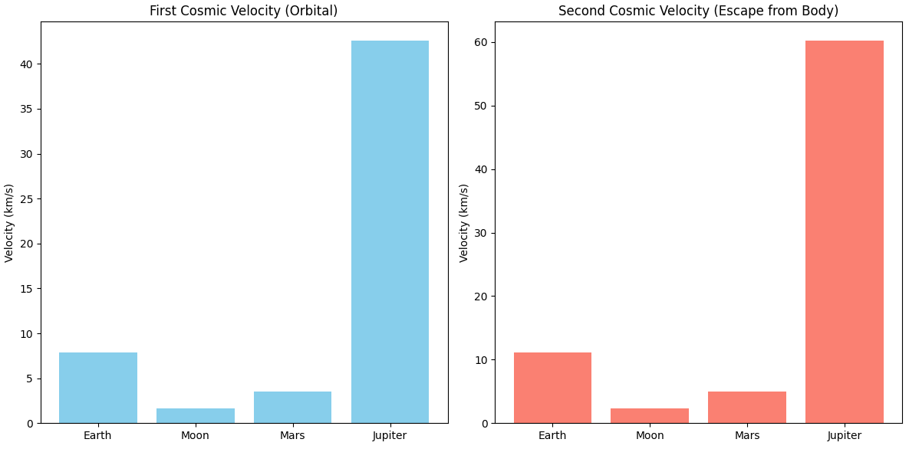
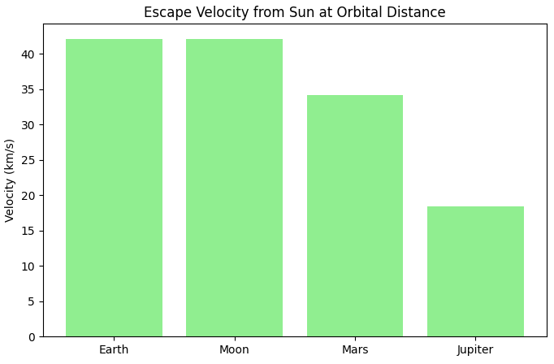
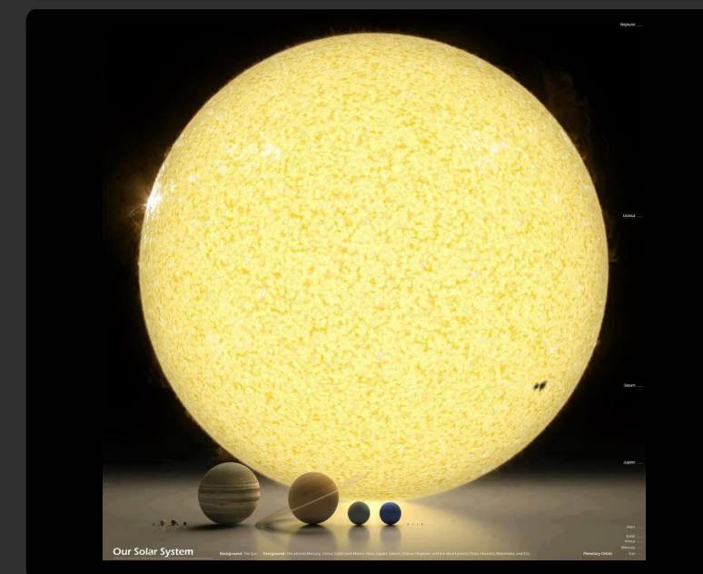

Problem 2
Problem 2: Escape Velocities and Cosmic Velocities
The concept of escape velocity is crucial for understanding the conditions required to leave a celestial body's gravitational influence. Extending this concept, the first, second, and third cosmic velocities define the thresholds for orbiting, escaping, and leaving a star system. These principles underpin modern space exploration, from launching satellites to interplanetary missions.
Solution
1. Definitions of Cosmic Velocities
-
First Cosmic Velocity (\(v_1\)): This is the minimum speed needed for an object to orbit a celestial body at its surface, assuming no atmospheric drag. It is also called the circular orbital velocity. For a body of mass \(M\) and radius \(R\), it is given by \(v_1 = \sqrt{\frac{GM}{R}}\), where \(G\) is the gravitational constant (\(G = 6.67430 \times 10^{-11} \, \text{m}^3 \text{kg}^{-1} \text{s}^{-2}\)).
-
Second Cosmic Velocity (\(v_2\)): Known as the escape velocity, this is the minimum speed required for an object to escape the gravitational pull of a celestial body and not return. It is given by \(v_2 = \sqrt{\frac{2GM}{R}} = \sqrt{2} \cdot v_1\).
-
Third Cosmic Velocity (\(v_3\)): This is the speed required for an object to escape the gravitational influence of a star system (e.g., the Solar System) entirely, assuming it starts from the orbit of a planet like Earth. It depends on the distance from the star and the planet’s orbital velocity. A simplified approximation for an object escaping the Sun from Earth's orbit is \(v_3 \approx \sqrt{2} \cdot v_{\text{orbit}}\), where \(v_{\text{orbit}}\) is Earth's orbital speed around the Sun.
2. Mathematical Derivations and Parameters
The derivations for these velocities stem from energy conservation and gravitational physics:
-
First Cosmic Velocity (\(v_1\)): For a circular orbit, the centripetal force equals the gravitational force: \(\frac{m v_1^2}{R} = \frac{G M m}{R^2}\), simplifying to \(v_1 = \sqrt{\frac{GM}{R}}\). Key parameters are \(G\), \(M\), and \(R\).
-
Second Cosmic Velocity (\(v_2\)): To escape, the total mechanical energy must be zero: kinetic energy \(\frac{1}{2} m v_2^2\) equals the potential energy \(\frac{G M m}{R}\), so \(\frac{1}{2} m v_2^2 = \frac{G M m}{R}\), yielding \(v_2 = \sqrt{\frac{2 G M}{R}}\).
-
Third Cosmic Velocity (\(v_3\)): This involves escaping the Sun’s gravity from Earth’s orbit. Earth’s orbital speed around the Sun is \(v_{\text{orbit}} = \sqrt{\frac{G M_{\text{Sun}}}{r}}\), where \(r\) is the distance from the Sun (e.g., 1 AU for Earth). The escape velocity from the Sun at this distance is \(\sqrt{\frac{2 G M_{\text{Sun}}}{r}}\). The third cosmic velocity is the additional speed needed beyond Earth’s orbital speed, approximated as \(v_3 = \sqrt{\frac{2 G M_{\text{Sun}}}{r}}\) if starting from rest relative to the Sun, but adjusted for Earth’s motion.
Parameters affecting these velocities include the mass of the celestial body (\(M\)), its radius (\(R\)), and, for \(v_3\), the distance from the star (\(r\)).
 
Cosmic Velocities for Earth:
First Cosmic Velocity (v1): 7.91 km/s (Orbital velocity just above surface)
Second Cosmic Velocity (v2): 11.19 km/s (Escape velocity from Earth's surface)
Escape Velocity from Sun at Earth's orbit: 42.13 km/s
3. Calculations and Visualization
Let’s calculate these velocities for Earth, Mars, and Jupiter using the following data:
- Earth: \(M = 5.972 \times 10^{24} \, \text{kg}\), \(R = 6.371 \times 10^6 \, \text{m}\).
- Mars: \(M = 6.417 \times 10^{23} \, \text{kg}\), \(R = 3.390 \times 10^6 \, \text{m}\).
- Jupiter: \(M = 1.898 \times 10^{27} \, \text{kg}\), \(R = 6.991 \times 10^7 \, \text{m}\).
- Sun (for \(v_3\) from Earth’s orbit): \(M_{\text{Sun}} = 1.989 \times 10^{30} \, \text{kg}\), \(r = 1.496 \times 10^{11} \, \text{m}\) (1 AU).

Python Script for Calculations
import numpy as np
import matplotlib.pyplot as plt
# Constants
G = 6.67430e-11 # Gravitational constant (m^3 kg^-1 s^-2)
# Celestial body data
bodies = {
'Earth': {'mass': 5.972e24, 'radius': 6.371e6},
'Mars': {'mass': 6.417e23, 'radius': 3.390e6},
'Jupiter': {'mass': 1.898e27, 'radius': 6.991e7}
}
sun_mass = 1.989e30 # Sun's mass (kg)
earth_sun_distance = 1.496e11 # 1 AU (m)
# Calculate velocities
v1, v2, v3 = [], [], []
labels = []
for body, data in bodies.items():
M = data['mass']
R = data['radius']
# First cosmic velocity
v1.append(np.sqrt(G * M / R) / 1000) # Convert to km/s
# Second cosmic velocity
v2.append(np.sqrt(2 * G * M / R) / 1000) # Convert to km/s
# Third cosmic velocity (approximation from Earth's orbit around Sun)
if body == 'Earth':
v_sun_escape = np.sqrt(2 * G * sun_mass / earth_sun_distance) / 1000 # km/s
v_orbit = np.sqrt(G * sun_mass / earth_sun_distance) / 1000 # km/s
v3.append(v_sun_escape) # Simplified: total escape speed from Sun
else:
v3.append(None) # Only calculate v3 for Earth in this example
labels.append(body)
# Plotting (you can run this in a Jupyter notebook)
plt.figure(figsize=(10, 6))
width = 0.25
x = np.arange(len(labels))
plt.bar(x - width, v1, width, label='First Cosmic Velocity (v1)', color='#1E90FF')
plt.bar(x, v2, width, label='Second Cosmic Velocity (v2)', color='#FFD700')
plt.bar(x + width, [v3[0], 0, 0], width, label='Third Cosmic Velocity (v3, Earth only)', color='#FF4500')
plt.xlabel('Celestial Body')
plt.ylabel('Velocity (km/s)')
plt.title('Cosmic Velocities for Earth, Mars, and Jupiter')
plt.xticks(x, labels)
plt.legend()
plt.grid(True)
plt.show()